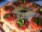

Pizza
PizzaPizza é uma preparação culinária que consiste em um disco de massa fermentada de trigo, regado com milho de tomates e coberto com ingredientes variados que normalmente incluem algum tipo de queijo, carnes preparadas ou defumadas e ervas, normalmente orégano ou manjericão, tudo assado em forno.
Alguns tipos e saboresA variedade de coberturas que se pode colocar sobre uma pizza é quase infinita, entretanto, algumas preparações são tradicionais e têm fiéis seguidores:
|  Marguerita |  Mussarela Mussarela |
 Portuguesa Portuguesa |
 Calabresa Calabresa |
 Califórnia Califórnia |
 Pepperoni Pepperoni |
 Quatro queijos Quatro queijos |
 Bacon Bacon |
Fonteshttps://pt.wikipedia.org/wiki/Pizza
https://www.pizza.it/
https://en.wikipedia.org/wiki/History_of_pizza